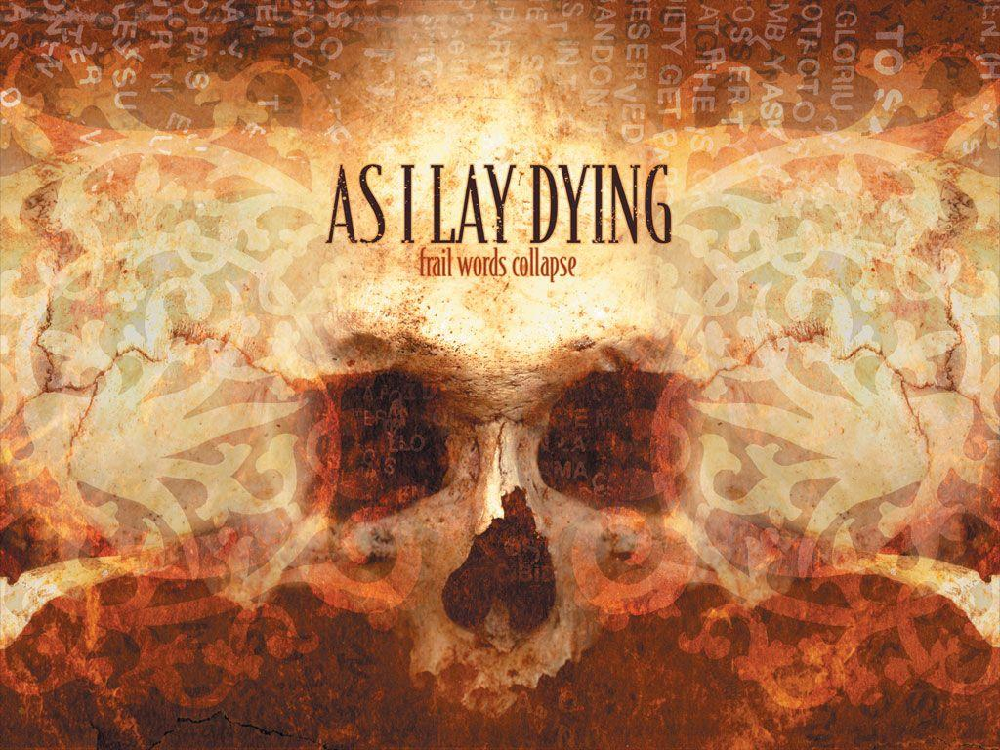

As I Lay Dying jest to amerykański zespół utworzony w 1999 roku. W piosenkach tego zespołu zawsze na pierwszym planie jest gitara elektryczna co fani zespołu bardzo sobie cenią. Zespół ten wydał bardzo wiele ciekawych i wartych posłuchania albumów.